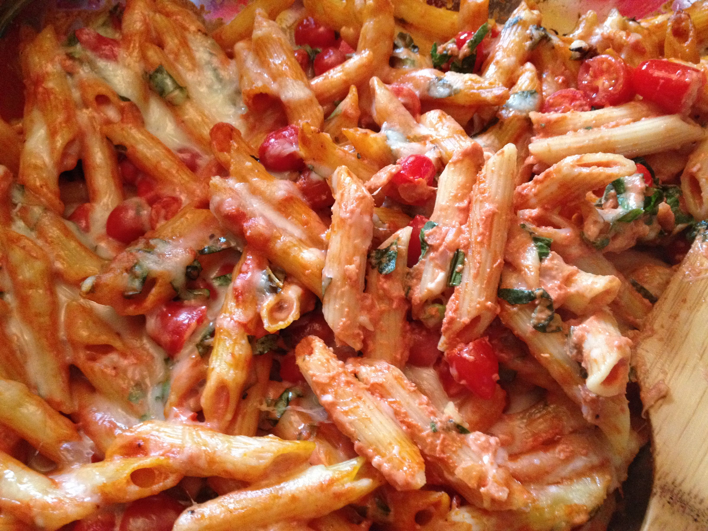

Tomato Pasta
Recipe taken from:
All Recipes

Description
Ingredients
- Penne Pasta (a single 16 ounce pack)
- Olive Oil (1 tbsp)
- Onion (1, finely chopped)
- Garlic (3 cloves, minced)
- Tomato Paste (2 tbsp)
- Whipping Cream (3/4 cup)
- Parmesan Cheese (1/2 cup, grated)
- Black Pepper (Freshly ground) & Salt
- White Sugar (1 pinch)
- Cherry Tomatos (1 lb, halved)
- Mozzarella Cheese (1.25 cups, shredded)
- Basil (1 bunch, finely chopped)
Steps
- Bring a large pot of lightly salted water to a boil.
Add penne and cook, stirring occasionally, until tender yet firm to the bite,
about 11 minutes. Drain, reserving 1 cup of cooking water.
- Heat olive oil in a large skillet over medium heat and cook onion until
soft and translucent while penne is cooking, about 5 minutes.
Add garlic and cook an additional 30 seconds.
Stir in tomato sauce and tomato paste and cook until slightly reduced, about 5 minutes.
Add cream and Parmesan cheese and season with salt, pepper, and sugar.
- Preheat oven to 400 degrees F (200 degrees C). Grease a baking dish.
- Stir some pasta cooking water into the sauce and add cooked penne.
Remove from heat and stir in cherry tomatoes, 1/2 the mozzarella cheese, and basil.
Pour penne mixture into the prepared baking dish and cover with remaining mozzarella cheese.
- Bake in the preheated oven until cheese is melted, about 20 minutes.
Main Menu